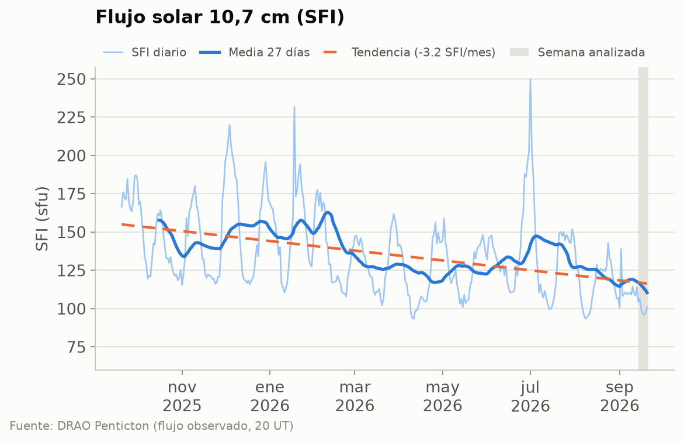
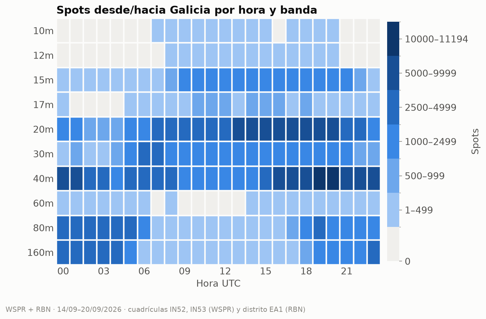
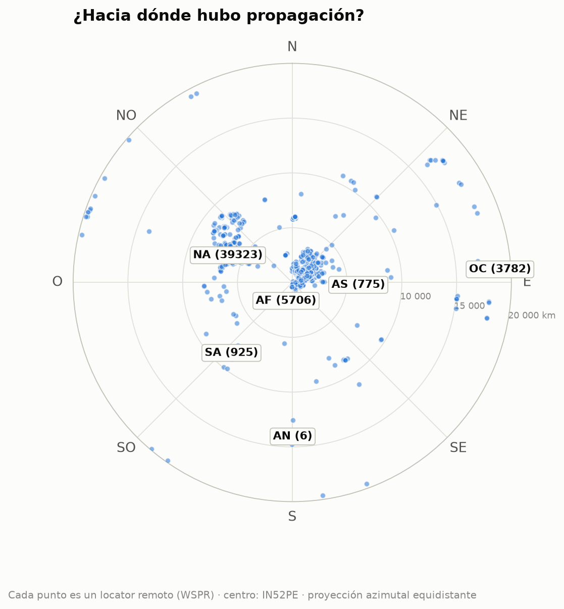

EA1RKV · Unión de Radioaficionados de Vigo-Val Miñor · estación de referencia Vigo (IN52PE) · semana analizada: 14 de septiembre de 2026 – 20 de septiembre de 2026 · previsión: lun 21/9 – dom 27/9
Este informe combina lo que dice la teoría (índices solares, predicciones) con lo que pasó de verdad (spots reales desde Galicia). Todas las horas en UTC salvo que se indique lo contrario.
| Día | SFI | Manchas | Ap | Kp máx. | |
|---|---|---|---|---|---|
| lun 14/9 | 104 | 51 | 11 | 4,00 | 🟡 |
| mar 15/9 | 107 | 23 | 8 | 3,33 | 🟢 |
| mié 16/9 | 100 | 23 | 9 | 3,67 | 🟢 |
| jue 17/9 | 97 | 11 | 9 | 3,00 | 🟢 |
| vie 18/9 | 96 | 0 | 5 | 2,00 | 🟢 |
| sáb 19/9 | 97 | 11 | 7 | 2,67 | 🟢 |
| dom 20/9 | 101 | 54 | 6 | 3,00 | 🟢 |
Semáforo Kp: 🟢 ≤ 3 tranquilo · 🟡 4 inquieto · 🔴 ≥ 5 tormenta.

Estamos en la fase descendente del ciclo 25: el SFI baja poco a poco, con altibajos de ~27 días (la rotación del Sol). La línea discontinua marca la tendencia del último año.
Lo que espera NOAA para esta semana: SFI entre 100 y 105, Ap máximo 20 y Kp máximo 5 (🔴 tormenta geomagnética (G1)); días con Kp ≥ 4 previstos: jue 24/9, vie 25/9.
Esta semana se registraron 348 500 spots con una estación gallega en un extremo (297 637 de WSPR, de 6 estaciones en IN52/IN53, y 50 863 de la Reverse Beacon Network en CW/RTTY). Las bandas con más actividad fueron 40m (118 899), 20m (101 070), 30m (33 354), 80m (33 021), y la hora más movida, las 19 UTC.

Cómo leerlo: cada casilla es una hora UTC en una banda; cuanto más oscura, más spots. Fíjate en cómo las bandas altas (10–15 m) se «encienden» con el Sol y las bajas (40–80 m) de noche.
| Banda | Distancia | Estación gallega | Corresponsal | Locator | Continente | Cuándo | SNR |
|---|---|---|---|---|---|---|---|
| 160m | 9 257 km | EA1DAV | Y84GI (oído desde Galicia) | JF40 | África | vie 18/9 20:00 UTC | -33 dB |
| 80m | 17 045 km | EB1A | VK5ARG (oyó a Galicia) | PF95ht | Oceanía | vie 18/9 18:00 UTC | -30 dB |
| 40m | 19 820 km | EB1A | ZL2005SWL (oyó a Galicia) | RE68mx | Oceanía | vie 18/9 06:48 UTC | -23 dB |
| 30m | 19 820 km | EB1A | ZL2005SWL (oyó a Galicia) | RE68mx | Oceanía | mié 16/9 05:12 UTC | -25 dB |
| 20m | 19 869 km | EB1A | ZL3RCK (oyó a Galicia) | RE66ft | Oceanía | mié 16/9 06:56 UTC | -14 dB |
| 17m | 17 719 km | EB1A | VK3FSK (oyó a Galicia) | QF22kg | Oceanía | lun 14/9 07:50 UTC | -22 dB |
| 15m | 17 667 km | EB1A | VK4EMM (oyó a Galicia) | QG62lr | Oceanía | lun 14/9 15:42 UTC | -25 dB |
Distancias de círculo máximo medidas desde IN52PE (WSPR).
| Continente | Spots | 160m | 80m | 60m | 40m | 30m | 20m | 17m | 15m | 12m | 10m |
|---|---|---|---|---|---|---|---|---|---|---|---|
| Europa | 290 590 | 29783 | 30827 | 136 | 107578 | 29720 | 74859 | 4780 | 12780 | 31 | 96 |
| Norteamérica | 45 021 | 353 | 1714 | 2 | 7951 | 2048 | 21932 | 1826 | 9187 | 6 | 2 |
| África | 5 911 | 563 | 453 | · | 1481 | 737 | 1520 | 213 | 943 | · | 1 |
| Oceanía | 3 995 | · | 8 | · | 1306 | 544 | 1877 | 49 | 211 | · | · |
| Asia | 1 695 | 177 | 2 | · | 364 | 111 | 595 | 63 | 349 | 6 | 28 |
| Sudamérica | 1 282 | · | 17 | · | 213 | 194 | 287 | 115 | 411 | 11 | 34 |
| Antártida | 6 | · | · | · | 6 | · | · | · | · | · | · |

Mapa centrado en Vigo: el ángulo es el rumbo al que apuntaría tu antena y la distancia al centro, los kilómetros. Entre paréntesis, los spots de cada continente. 1 479 locators distintos.
Sin datos esta semana.
Sin datos esta semana.
El jue 24/9, en Vigo amanece a las 06:24 UTC y anochece a las 18:28 UTC. Durante el crepúsculo la absorción de la capa D desaparece antes de que se deshaga la capa F: es el momento de buscar DX en 160, 80 y 40 m a lo largo del terminador.
| Destino | Orto DX | Ocaso DX | Terminador común (±45 min) | Noche en los dos extremos |
|---|---|---|---|---|
| Norteamérica este (Nueva York) | 10:45 | 22:49 | — | 22:51–06:24 |
| Caribe (Santo Domingo) | 10:29 | 22:34 | — | 22:34–06:24 |
| Sudamérica (Buenos Aires) | 09:40 | 21:51 | — | 21:50–06:24 |
| Japón (Tokio) | 20:30 | 08:35 | — | 18:28–20:31 |
| Oceanía (Sídney) | 19:42 | 07:52 | 18:56–19:13 UTC (ocaso Vigo / orto DX) | 18:28–19:41 |
| Sudáfrica (Johannesburgo) | 03:55 | 16:04 | — | 18:30–03:55 |
El «terminador común» es la línea gris propiamente dicha (amanecer o anochecer a la vez en los dos extremos). La «noche en los dos extremos» es la ventana para 160 y 80 m, y a menudo para 40 m.
Sin datos esta semana.
Consejo: el meteor scatter funciona mejor al amanecer local, cuando la Tierra «barre» los meteoros de frente. Modos: MSK144 (6 m/2 m) con WSJT-X.
Los mejores pases (elevación máxima ≥ 30°) de cada satélite:
| Satélite | Día | AOS (UTC) | LOS (UTC) | Hora local | Elev. máx. | Min |
|---|---|---|---|---|---|---|
| RS-44 | lun 21/9 | 06:23 | 06:46 | 08:23 | 85° | 23 |
| AO-123 | lun 21/9 | 08:54 | 09:05 | 10:54 | 81° | 11 |
| AO-7 | lun 21/9 | 18:23 | 18:45 | 20:23 | 80° | 22 |
| RS-44 | lun 21/9 | 19:01 | 19:24 | 21:01 | 81° | 23 |
| FO-29 | lun 21/9 | 19:36 | 19:53 | 21:36 | 89° | 17 |
| ISS (ZARYA) | lun 21/9 | 21:37 | 21:47 | 23:37 | 78° | 11 |
| AO-27 | lun 21/9 | 21:59 | 22:15 | 23:59 | 88° | 15 |
| FO-29 | mié 23/9 | 06:35 | 06:56 | 08:35 | 86° | 21 |
| SO-50 | mié 23/9 | 14:30 | 14:45 | 16:30 | 69° | 14 |
| AO-7 | mié 23/9 | 18:16 | 18:38 | 20:16 | 87° | 22 |
| SO-50 | mié 23/9 | 22:59 | 23:13 | 00:59 | 72° | 14 |
| AO-123 | jue 24/9 | 08:46 | 08:57 | 10:46 | 80° | 11 |
| ISS (ZARYA) | jue 24/9 | 14:23 | 14:34 | 16:23 | 79° | 11 |
| AO-123 | jue 24/9 | 21:41 | 21:52 | 23:41 | 85° | 11 |
| AO-27 | jue 24/9 | 22:09 | 22:24 | 00:09 | 77° | 15 |
| FO-29 | vie 25/9 | 06:30 | 06:50 | 08:30 | 90° | 21 |
| AO-7 | vie 25/9 | 18:08 | 18:31 | 20:08 | 86° | 22 |
| RS-44 | vie 25/9 | 18:43 | 19:06 | 20:43 | 89° | 23 |
| ISS (ZARYA) | vie 25/9 | 20:05 | 20:16 | 22:05 | 75° | 11 |
| SO-50 | sáb 26/9 | 22:11 | 22:25 | 00:11 | 71° | 14 |
| AO-27 | dom 27/9 | 11:00 | 11:15 | 13:00 | 83° | 15 |
PENDIENTE: un socio debe escribir aquí su comentario (qué trabajó, qué oyó, qué recomienda para la semana). El informe no se publica sin este párrafo.
Borrador generado automáticamente el 2026-09-27 21:25 UTC por el script del radioclub EA1RKV. Las secciones sin datos indican que la fuente no respondió esta semana.